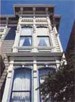
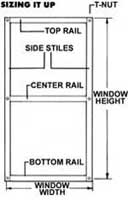
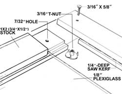
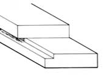
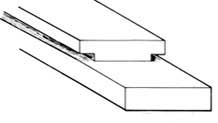
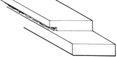

A conscientious renovator's answer to changing seasons and chilly nights.
Windows often present a dilemma to people involved in renovating older houses. Beautiful though they may be, multiple-light, double-hung windows are simply at odds with comfort and energy efficiency. No one likes to sit near an expanse of glass on a frigid evening and feel the heat being sucked away.
Storm windows are the traditional solution to winter weatherization in a home with single-glazed windows - for good reasons. Add another layer of glazing (a catchall term that covers glass and its plastic imitators), and the heat loss from a window is virtually halved. Air leakage will also be reduced, further improving overall performance. Storm windows are convenient, as well. They can easily be removed in the spring and replaced with screens to let air in and keep bugs out.
With the advent of more-efficient windows, though, the storm window business all but collapsed. The only readily available products are aluminum framed, and mount to the face of the exterior window casings. If you find this solution aesthetically unacceptable, there's only one other option: custom storm windows, made by a mill works or by you.
Storm windows like the ones shown here have served five years now on a staff' member's turn-of-the-century farmhouse. Over the period, the design has been improved bit by bit to become as simple to build as possible while maintaining strength and appearance. This sorting-out period has shown us where to economize and where to buy the best.
Even though it's the most expensive glazing, we use Plexiglas or another transparent, rigid plastic. Over the years, plastic films deteriorate in sunlight or end up punctured by tree limbs, errant Frisbees or berserk birds. And if one of those hazards doesn't spell the end of a glass pane, annual removal and storage eventually will. The only precaution we've learned concerning working with rigid plastic is to be sure to leave a 1/8" leeway on all sides of the panel so that it has room to move in the frame as it expands and contracts with temperature change.
We've made storms out of clear yellow pine, No. 1 spruce fir and banak, but any reasonably stable, sound wood will do. Since the frames are painted, the appearance of the grain isn't important. You can either buy 1 X 2 stock, or rip pieces out of wider material to save a little on lumber costs. If you're making more than three windows at a time (an efficient approach), take a few minutes to make simple jigs for the stiles, rails and lap joints. You'll be more than repaid in ease and accuracy later. The same jigs will work for screen windows, too.
STORM WINDOW
A simple solution to the aesthetics/expense dilemma
We've assembled frames with screws, nuts with square bolts, and T-nuts with bolts. Each system has its advantages, depending on your complement of tools. If you have two electric drills, one with a countersink and the other with a Phillips head bit, it's quickest to use Phillips head wood screws. Bolts and nuts go in quickly with one drill and a countersink. Lacking a countersink, you can pull the head of a flathead machine screw in flush to the material if there's a T-nut on the other side for bite. An option - brass fasteners - will eliminate any fear of discoloration from rust.
As long as the joints are tight, glue shouldn't be necessary. However, if you do decide to glue, use something waterproof.
STORM WINDOWS
The same frames can screen out summer's pesky bugs.
Use the same frame dimensions to make screen windows, but leave out the slots for the panes. Instead, run a saw kerf about 1/4" deep in the centers of the outside faces of the rails and stiles. Lay the screen out on the frame so that it's reasonably tight, and then force the screen into the kerf with screen rope (rubber cord). This will secure the mesh and pull it taut.
There are two other approaches to the problem of maintaining historical authenticity while reducing heat loss from windows. One is to replace the sashes or the entire window units with divided-light, insulated windows. This is, of course, the most expensive option, but it's also the most effective. There are now double- and triple-glazed windows with low-emissivity coatings in standard and custom sizes. R-values of over three are available. The muntins (wood pieces that separate the lights) are necessarily somewhat thicker than those in single-glazed windows, to accommodate the thicker glass, but the effect is subdued unless old and new are mixed visually. With new windows, you'll get unsurpassed comfort and efficiency, and you'll dispense with the semiannual hassle of installing and removing storms.
Many experts are now encouraging owners of historically significant houses to insulate old windows from the inside. A variety of kits consisting of flexible acrylic glazing and installation materials make these interior storm windows comparatively simple to install. Less expensive glazings can be used inside, since the material is protected from ultraviolet light and the ravages of nature, so the cost of the installations is low as well. Interior storm windows are practically invisible from the outside, though they're somewhat more obvious from the inside. A couple of caveats apply: Many kits are not designed to be removed and reinstalled, so you either buy new ones each year or leave the window sealed. Also, if you have small children, your storm windows are probably safer outdoors than in.
Manufacturers of Interior Storm Windows
Defender Industries
P.O. Box 3582
Bridgeport, CT 06605
203/367-2882
Spring Tite Energy Systems, Inc.
SR 71
Shelburne, NH 03581
603/466-2863, 815/432-2200
Thermo-Press Corp.
5406 Distributor Dr.
Richmond, VA 23225
804/231-2964
Manufacturers of Divided-Light,Insulated Windows
Acousti Tech Inc.
41355 Production Dr.
Mt. Clemens, MI 48045
313/469-3311
D.V.H. Co.
15 S.W. 3rd Ave.
Gainesville,.FL 32607
Literature: $2.50
Marvin Windows
Warroad, MN 56763
800/346-5128
Midwest Wood Products
1051 S. Rolff St.
Davenport, IA 52802
319/323-4757
Wes-Pine Wood Windows
P.O. Box 1157
W. Hanover, MA 02339
617/878-2102
|
Many older houses are sorely in need of insulating storm windows. |
 FRAME ASSEMBLY |
 STILE (SIDE) |
|
 CENTER RAIL |
 RAIL (TOP AND BOTTOM) |
 |
|
 |
|
|